第 1 页 · 数智人才培养

数智人才培养
AI通识精品系列
周苏 教授 QQ：81505050
人工智能通识教程

第 2 页 · 第12章
第12章
周苏 教授 QQ：81505050
群体智能技术


第 3 页 · 对群体智能（又称群集智能）的研究源于对蚂蚁、蜜蜂等社会性昆虫群体行为的研究，最早被用在细胞机器人系统的描述中。群体具有自
对群体智能（又称群集智能）的研究源于对蚂蚁、蜜蜂等社会性昆虫群体行为的研究，最早被用在细胞机器人系统的描述中。群体具有自组织性，它的控制是分布式的，不存在中心控制。
群体智能的算法主要有智能蚁群算法和粒子群算法。智能蚁群算法包括蚁群优化算法、蚁群聚类算法和多机器人协同合作系统。蚁群优化算法和粒子群优化算法在求解实际问题时应用最为广泛。
第12章 群体智能技术
第 4 页 · 01

01
向蜜蜂学习
群体智能
02
什么是
群体智能
03
典型
算法模型
04
群体智能
背后的故事
目录 / CONTENTS
05
群体智能
的应用
06
机器“狼”
的发展
第 5 页 · PART 01
PART 01
向蜜蜂学习群体智能
第 6 页 · 蜜蜂是自然界中被研究的时间最长的群体智能动物之一。蜜蜂在进化过程中首先形成了大脑以处理信息，但是在某种程度上它们的大脑不
蜜蜂是自然界中被研究的时间最长的群体智能动物之一。蜜蜂在进化过程中首先形成了大脑以处理信息，但是在某种程度上它们的大脑不能太大，这大概因为它们是飞行动物，脑袋小能够减轻飞行负担。事实上，蜜蜂的大脑比一粒沙子还要小，其中只有不到一百万个神
经元。相比之下，人类大约有 850 亿个神经
元。不管你有多聪明，把它除以85 000，这
就是一只蜜蜂的智慧。
12.1 向蜜蜂学习群体智能
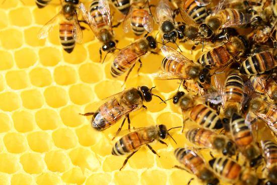
第 7 页 · 所以，一只蜜蜂是一个非常非常简单的有机体，但它们也有非常困难的问题需要解决，这也是关于蜜蜂被研究最多的一个问题——选择筑
所以，一只蜜蜂是一个非常非常简单的有机体，但它们也有非常困难的问题需要解决，这也是关于蜜蜂被研究最多的一个问题——选择筑巢地点。通常一个蜂巢内有1万只蜜蜂，并且随着蜜蜂数量的壮大，它们每年都需要一个新家。它们的筑巢地点可能是空树干里面的一个洞，也可能在建筑物某一侧。因此，蜜蜂群体需要找到合适的筑巢地点。这听起来好像很简单，但对于蜜蜂来说，这是一个关乎蜂群生死的决定。它们选择的筑巢地点越好，对物种生存就会越有利。
12.1 向蜜蜂学习群体智能
第 8 页 · 为了解决这个问题，蜜蜂形成了蜂群思维，或者说群体智能，而第一步就是它们需要收集关于周围世界的信息。因此，蜂群会先派出数百
为了解决这个问题，蜜蜂形成了蜂群思维，或者说群体智能，而第一步就是它们需要收集关于周围世界的信息。因此，蜂群会先派出数百只侦察蜜蜂到外面约78平方千米的地方进行搜索，寻找它们可以筑巢的潜在地点，这是数据收集阶段。然后，这些侦察蜜蜂把信息带
回蜂群，接下来，就是最困难的部分：它们
要做出决定，在找到的几十个潜在地点中挑
选出最好的。蜜蜂们非常挑剔，它们需要找
到一个能满足一系列条件的新住所。
12.1 向蜜蜂学习群体智能
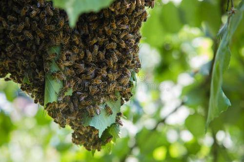
第 9 页 · 新房子必须足够大，可以储存冬天所需的蜂蜜；通风要足够好，这样在夏天能保持凉爽；需要能够隔热，以便在寒冷的夜晚保持温暖；需
新房子必须足够大，可以储存冬天所需的蜂蜜；通风要足够好，这样在夏天能保持凉爽；需要能够隔热，以便在寒冷的夜晚保持温暖；需要保护蜜蜂不受雨水的影响，但也需要有充足水源。当然，还需要有良好的地理位置，接近好的花粉来源。
这是一个复杂多变量问题。事实上，研究这些数据的人会发现，人类寻找这个多变量优化问题的最佳解决方案都是非常困难的。换成类似具有挑战性的人类的问题，比如为新工厂选取厂址，或者为开设新店选取完美的店址，或者定义新产品的完美特性，这些问题都很难找到一个十全十美的解决方案。
12.1 向蜜蜂学习群体智能
第 10 页 · 然而，生物学家的研究表明，蜜蜂常常能够从所有可用的选项中选出最佳的解决方案，或者选择第二好的解决方案。这是很了不起的。事
然而，生物学家的研究表明，蜜蜂常常能够从所有可用的选项中选出最佳的解决方案，或者选择第二好的解决方案。这是很了不起的。事实上，通过群体智能一起工作，蜜蜂能够做出一个优化的决定，而比蜜蜂大脑强大85 000倍的人脑，却很难做到这一点。
12.1 向蜜蜂学习群体智能
第 11 页 · 那么蜜蜂们是怎么做到的呢？它们形成了一个实时系统，在这个系统中，它们可以一起处理数据，并在最优解上汇聚在一起。这是大自然
那么蜜蜂们是怎么做到的呢？它们形成了一个实时系统，在这个系统中，它们可以一起处理数据，并在最优解上汇聚在一起。这是大自然的造化，蜜蜂想出了绝妙的办法，它们通过振动身体来处理数据，实现这一过程，生物学家把这叫做“摇摆舞”。生物学家刚开始研究蜂巢的时候，他们看到这些蜜蜂在做一些看起来像是在跳舞的事情，它们振动自己的身体，这些振动所产生的信号代表它们是否支持某个特定的筑巢地点。
12.1 向蜜蜂学习群体智能
第 12 页 · 成百上千的蜜蜂同时振动它们的身体时，基本上就是一个多维的选择问题。它们揣度每个决定，探索所有不同的选择，直到在某个解决方
成百上千的蜜蜂同时振动它们的身体时，基本上就是一个多维的选择问题。它们揣度每个决定，探索所有不同的选择，直到在某个解决方案中能够达成一致，而这几乎总是最优或者次优的解决方案，并且能够解决单个大脑无法解决的问题。这是关于群体智能最著名的例子，我们也看到同样的过程发生在鸟群或者鱼群中，它们的群体智能大于个体。
12.1 向蜜蜂学习群体智能
第 13 页 · 利用这一方式，我们来考虑一大群游客在曼哈顿找一家优质酒店。假设大部分游客都年老体弱，无法长途行走。首先，在中央公园的演奏
利用这一方式，我们来考虑一大群游客在曼哈顿找一家优质酒店。假设大部分游客都年老体弱，无法长途行走。首先，在中央公园的演奏台建立一个临时基地，接着，派出体力最好的成员到处巡查，随后他们回到演奏台并互相比较笔记。听到有更好的酒店选择时，他们再次前往实地考察。最后，大家达成共识，所有人再集体前往目标酒店办理入住。
12.1 向蜜蜂学习群体智能
第 14 页 · 曼哈顿的街道有两种命名方式，街常为东西走向，而道常为南北走向，所以侦察兵回来的时候，只需要说明该酒店最接近哪条街哪条道，
曼哈顿的街道有两种命名方式，街常为东西走向，而道常为南北走向，所以侦察兵回来的时候，只需要说明该酒店最接近哪条街哪条道，大家就可以明白。任何时间，侦察兵的定位都可以用两个数字来表示：街和大道。如果用数学语言表示，就是X和Y。假如需要的话，我们还可以在演奏台准备一张坐标纸，追踪每一个侦察兵的行走路线，以此定位酒店位置。侦察兵在曼哈顿街道上寻找最佳酒店就如同在XY坐标轴上寻找最优值一样。
12.1 向蜜蜂学习群体智能
第 15 页 · 所谓集群机器人或者人工蜂群智能，就是让许多简单的物理机器人协作。就像昆虫群体一样，机器人会根据集群行为行动，它们会在环境
所谓集群机器人或者人工蜂群智能，就是让许多简单的物理机器人协作。就像昆虫群体一样，机器人会根据集群行为行动，它们会在环境中导航，与其他机器人沟通。
与分散机器人系统不同，集群机器人会用到大量的机器人个体，它是一个灵活的系统。拉迪卡·纳格帕尔领导的团队以及其他许多科研机构都在研究这门技术。此技术未来获得成功，集群机器人会展示出巨大的潜力，影响医疗保健、军事等行业。机器人越来越小，未来我们也许可以让大量纳米机器人以群蜂的形式协调工作，在微机械、人体内执行任务。
12.1 向蜜蜂学习群体智能
第 16 页 · PART 02
PART 02
什么是群体智能
第 17 页 · 群体智能的概念来自对自然界中一些社会性昆虫，如蚂蚁、蜜蜂等的群体行为的研究。单只蚂蚁的智能并不高，它看起来不过是一段长着
群体智能的概念来自对自然界中一些社会性昆虫，如蚂蚁、蜜蜂等的群体行为的研究。单只蚂蚁的智能并不高，它看起来不过是一段长着腿的神经节而已。不过，几只蚂蚁凑到一起，就可以一起往蚁穴搬运路上遇到的食物。如果是一群蚂蚁，它们就能协同工作，建起坚固、漂亮的巢穴，一起抵御危险，抚养后代。社会动物以一个统一的动态集体工作时，其群体涌现出的解决问题和做出决策的智慧会超越大多数单独成员，如蚁群搭桥、鸟群觅食、蜂群筑巢等，这一过程在生物学上被称为“群体智能”。
12.2 什么是群体智能
第 18 页 · 人类可以形成群体智能吗？人类并没有进化出群集的能力，因为人类缺少同类用于建立实时反馈循环的敏锐连接（比如蚂蚁的触角），这
人类可以形成群体智能吗？人类并没有进化出群集的能力，因为人类缺少同类用于建立实时反馈循环的敏锐连接（比如蚂蚁的触角），这种连接是高度相关的，被认为是一个“超级器官”。通过这么做，这些生物能够进行最优选择，这要远比独立个体的选择能力要强得多。
12.2 什么是群体智能
第 19 页 · 在某个群体中，若存在众多无智能的个体，它们通过相互之间的简单合作所表现出来的群居性生物的智能行为是分布式控制的，具有自组
在某个群体中，若存在众多无智能的个体，它们通过相互之间的简单合作所表现出来的群居性生物的智能行为是分布式控制的，具有自组织性。“群体智能”作为计算机专业术语最早是在1989年由赫拉多等提出的，用来描述电脑屏幕上细胞机器人的自组织算法所具有的分布控制、去中心化的智能行为。早期学者主要专注于群体行为特征规律的研究，并提出了一系列具有群体智能特征的算法，如蚁群优化算法在解决“旅行商问题”等数学难题上得到了较好的应用。
12.2.1 群体人工智能技术
第 20 页 · 如今，人类群体、大数据、物联网已经实现了广泛和深度的互联，群体智能的发展方向逐渐转移到人、机、物融合的方向上来。在具体实
如今，人类群体、大数据、物联网已经实现了广泛和深度的互联，群体智能的发展方向逐渐转移到人、机、物融合的方向上来。在具体实现上，智能计算模式逐渐从“以机器为中心”的模式走向“群体计算回路”，智能系统开发也从封闭和计划走向了开放和竞争。
人类可以做到把个人的思考组合起来，让它们形成一个统一的动态系统，以做出更好的决策、预测、评估和判断。人类群集已经被证明在预测体育赛事结果、金融趋势甚至是奥斯卡奖得主这些事件上的准确率超过了个体专家。
12.2.1 群体人工智能技术
第 21 页 · 例如，群体人工智能技术能让群体组成实时的线上系统，把世界各地的人作为“人类群集”连接起来，这是一个人类实时输入和众多AI
例如，群体人工智能技术能让群体组成实时的线上系统，把世界各地的人作为“人类群集”连接起来，这是一个人类实时输入和众多AI算法的结合。群体人工智能结合人类参与者的知识、智慧、硬件和直觉，并把这些要素组合成一个统一的新智能，能生成最优的预测、决策、洞见和判断。
依赖于每个格子单元（细胞）的几条简单运动规则，可以使细胞集合的运动表现出超常的智能行为。群体智能不是简单的多个体的集合，而是超越个体行为的一种更高级表现，这种从个体行为到群体行为的演变过程往往极其复杂，以至于往往无法预测。
12.2.1 群体人工智能技术
第 22 页 · 群体智能有两种机制：
群体智能有两种机制：
（1）自上而下有组织的群体智能行为。这种机制会形成一种分层有序的组织架构。自上而下的群体智能形成机制是在问题可分解的情况下，不同个体之间通过蜂群算法集成进行合作，进而达到高效解决复杂问题的机制。美国美国国防部高级研究计划局正在开展的“进攻性蜂群战术”（OFFSET）项目，就是通过自上而下的群体智能机制将群体智能推向实战化水平。德国国防军也运用自上而下的群体智能机制开发无人机蜂群战术级人工智能快速决策系统。
12.2.2 群体智能的两种机制
第 23 页 · （2）自下而上自组织的群体智能涌现。这种机制可使群体涌现出个体不具有的新属性，而这种新属性正是个体之间综合作用的结果。美
（2）自下而上自组织的群体智能涌现。这种机制可使群体涌现出个体不具有的新属性，而这种新属性正是个体之间综合作用的结果。美国科技作家凯文·凯利在《失控：全人类的最终命运和结局》中提到：“一种由无数默默无闻的零件，通过永不停歇的工作，而形成的缓慢而宽广的创造力”，这就是群体智能涌现的过程。例如由多个简单机器人组成的群体机器人系统，通过“分布自组织”的协作，可以完成单个机器人无法完成或难以完成的工作。
12.2.2 群体智能的两种机制
第 24 页 · 基于群体智能的技术可用于许多应用程序。各国正在研究用于控制无人驾驶车辆的群体技术，欧洲航天局正在考虑用于自组装和干涉测量
基于群体智能的技术可用于许多应用程序。各国正在研究用于控制无人驾驶车辆的群体技术，欧洲航天局正在考虑用于自组装和干涉测量的轨道群，美国宇航局正在研究使用群体技术进行行星测绘等。安东尼·刘易斯和乔治·贝基1992年撰写的论文中，讨论了使用群体智能来控制体内纳米机器人，以杀死癌症肿瘤的可能性。相反，里菲和阿伯使用随机扩散搜索来帮助定位肿瘤。群体智能也已应用于数据挖掘等领域，例如DoRoO等人和惠普在20世纪90年代中期以来研究了基于蚂蚁的路由算法在电信网络中的应用。
12.2.3 基本原则与特点
第 25 页 · 米洛纳斯（1994年）提出了群体智能应该遵循的五条基本原则，分别为：
米洛纳斯（1994年）提出了群体智能应该遵循的五条基本原则，分别为：
（1）邻近原则，群体能够进行简单的空间和时间计算；
（2）品质原则，群体能够响应环境中的品质因子；
（3）多样性反应原则，群体的行动范围不应该太窄；
（4）稳定性原则，群体不应在每次环境变化时都改变自身的行为；
（5）适应性原则，在所需代价不太高的情况下，群体能够在适当的时候改变自身的行为。
12.2.3 基本原则与特点
第 26 页 · 这些原则说明实现群体智能的智能主体必须能够在环境中表现出自主性、反应性、学习性和自适应性等智能特性。但是，这并不代表群体
这些原则说明实现群体智能的智能主体必须能够在环境中表现出自主性、反应性、学习性和自适应性等智能特性。但是，这并不代表群体中的每个个体都相当复杂，恰恰相反，就像单只蚂蚁智能不高一样，组成群体的每个个体都只具有简单智能，它们通过相互之间的合作表现出复杂的智能行为。
12.2.3 基本原则与特点
第 27 页 · 可以这样说，群体智能的核心是由众多简单个体组成的群体，能够通过相互之间的简单合作来实现某一功能，完成某一任务。 其中，“
可以这样说，群体智能的核心是由众多简单个体组成的群体，能够通过相互之间的简单合作来实现某一功能，完成某一任务。 其中，“简单个体”是指单个个体只具有简单的能力或智能，而“简单合作”是指个体和与其邻近的个体进行某种简单的直接通信或通过改变环境间接与其他个体通信，从而可以相互影响、协同动作。
12.2.3 基本原则与特点
第 28 页 · 群体智能具有以下特点：
群体智能具有以下特点：
（1）控制是分布式的，不存在中心控制。因而它更能够适应当前网络环境下的工作状态，并且具有较强的鲁棒性，即不会由于某一个或几个个体出现故障而影响群体对整个问题的求解。
（2）群体中的每个个体都能够改变环境，这是个体之间间接通信的一种方式，被称为“激发工作”。由于群体智能可以通过非直接通信的方式进行信息的传输与合作，因而随着个体数目的增加，通信开销的增幅较小，因此，它具有较好的可扩充性。
12.2.3 基本原则与特点
第 29 页 · （3）群体中每个个体的能力或遵循的行为规则非常简单，因而群体智能具有简单性特点。
（3）群体中每个个体的能力或遵循的行为规则非常简单，因而群体智能具有简单性特点。
（4）群体表现出的复杂行为是通过简单个体交互过程突现出来的智能，群体具有自组织性。
12.2.3 基本原则与特点
第 30 页 · PART 03
PART 03
典型算法模型
第 31 页 · 群体智能算法可以分成两个方面：对生物进行模拟和对非生物（烟花、磁铁、头脑风暴等）进行模拟，针对群体智能的研究已经取得了许
群体智能算法可以分成两个方面：对生物进行模拟和对非生物（烟花、磁铁、头脑风暴等）进行模拟，针对群体智能的研究已经取得了许多重要的结果。1991年意大利学者多里戈提出蚁群优化理论，1995年，肯尼迪等学者提出粒子群优化算法，此后群体智能研究迅速展开。
蚁群优化（ACO）和粒子群优化（PSO）是两种最广为人知的“群体智能”算法。从基础层面上来看，这些算法都使用了多智能体。每个智能体执行非常基础的动作，合起来就是更复杂、更即时的动作，可用于解决问题。蚁群优化与粒子群优化这二者的目的都是执行即时动作，但采用的方式不同。
12.3 典型算法模型
第 32 页 · 蚁群优化与真实蚁群类似，利用信息激素指导单个智能体走最短的路径。最初，随机信息激素在问题空间中初始化，单个智能体开始遍历
蚁群优化与真实蚁群类似，利用信息激素指导单个智能体走最短的路径。最初，随机信息激素在问题空间中初始化，单个智能体开始遍历搜索空间，边走边洒下信息激素。信息激素在每个时间步中按一定速率衰减。单个智能体根据前方的信息激素强度决定遍历搜索空间的路径。某个方向的信息激素强度越大，智能体越可能朝这个方向前进。全局最优方案就是具备最强信息激素的路径。
12.3 典型算法模型
第 33 页 · 粒子群优化更关注整体方向。多个智能体初始化，并按随机方向前进。每个时间步中，每个智能体都需要就是否改变方向作出决策，决策
粒子群优化更关注整体方向。多个智能体初始化，并按随机方向前进。每个时间步中，每个智能体都需要就是否改变方向作出决策，决策基于全局最优解的方向、局部最优解的方向和当前方向。新方向通常是以上三个值的最优“权衡”结果。
12.3 典型算法模型
第 34 页 · 蚂蚁生活在一个十分高效并且秩序井然的群体之中，它们几乎总能高效地完成每件事情。它们修建蚁巢来保证最佳温度和空气流通，确定
蚂蚁生活在一个十分高效并且秩序井然的群体之中，它们几乎总能高效地完成每件事情。它们修建蚁巢来保证最佳温度和空气流通，确定食物位置后能够选定最佳路径，并以最快速度赶到。有人可能认为这是由于某个集权中心，比如蚁后，在管控它们的所有行动。事实上，这样的权力中心并不存在，蚁后不过是产卵的“机器”而已，每一只蚂蚁都是自主的独立个体。
12.3.1 蚁群算法
第 35 页 · 在寻找食物时，蚂蚁一开始会漫无目的地到处走动，直到发现另一只蚂蚁带着食物返回巢穴时留下的信息素踪迹，它就开始沿着踪迹行走
在寻找食物时，蚂蚁一开始会漫无目的地到处走动，直到发现另一只蚂蚁带着食物返回巢穴时留下的信息素踪迹，它就开始沿着踪迹行走。信息素越强，追踪的可能性越大。在找到食物后返回巢穴时留下自己的踪迹。如果该地还有大量食物，其他蚂蚁也会按照该路径来回往复，踪迹将变得越来越鲜明，对路过蚂蚁的吸引力也会越来越大。偶尔会有一些蚂蚁因为找不到踪迹而选择不同路径。如果新路径更短，那么大量的蚂蚁将在这条踪迹上留下越来越多的信息素，旧路径上的信息素逐渐蒸发。随着时间的流逝，蚂蚁们选择的路径会越来越接近最佳路径。
12.3.1 蚁群算法
第 36 页 · 蚁群能够搭建身体浮桥跨越缺口地形并不是偶然事件。一个蚁群可能在同时搭建超过50只蚂蚁组成的桥梁，每个桥梁从1只蚂蚁到50
蚁群能够搭建身体浮桥跨越缺口地形并不是偶然事件。一个蚁群可能在同时搭建超过50只蚂蚁组成的桥梁，每个桥梁从1只蚂蚁到50只蚂蚁不等。蚂蚁不仅可以建造桥梁，而且能够有效评估桥梁的成
本和效率之间的平衡，比如在V字形道路上，蚁
群会自动调整到合适的位置建造桥梁，既不是靠
近V顶点部分，也不是V开口最大的部分。
12.3.1 蚁群算法
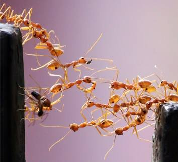
第 37 页 · 生物学家对蚁群桥梁研究的算法表明，每只蚂蚁并不知道桥梁的整体形状，它们只是在遵循两个基本原则：
生物学家对蚁群桥梁研究的算法表明，每只蚂蚁并不知道桥梁的整体形状，它们只是在遵循两个基本原则：
（1）如果我身上有其他蚂蚁经过，那么我就保持不动；
（2）如果我身上蚂蚁经过的频率低于某个阈值，我就加入行军，不再充当桥梁。
12.3.1 蚁群算法
第 38 页 · 数十只蚂蚁可以一起组成“木”筏渡过水面。当蚁群迁徙的时候，整个木筏可能包含数万只或更多蚂蚁。每只蚂蚁都不知道木筏的整体形
数十只蚂蚁可以一起组成“木”筏渡过水面。当蚁群迁徙的时候，整个木筏可能包含数万只或更多蚂蚁。每只蚂蚁都不知道木筏的整体形状，也不知道木筏将要漂流的方向。但蚂蚁之间非常巧妙的互相连接，形成一种透气不透水的三维立体结构，即使完全沉在水里的底部蚂蚁也能生存。而这种结构也使整个木筏包含超过75%空气体积，所以能够顺利的漂浮在水面。
12.3.1 蚁群算法
第 39 页 · 蚁群在地面形成非常复杂的寻找食物和搬运食物的路线，似乎整个集体总是能够找到最短的搬运路线，然而每只蚂蚁并不知道这种智能是
蚁群在地面形成非常复杂的寻找食物和搬运食物的路线，似乎整个集体总是能够找到最短的搬运路线，然而每只蚂蚁并不知道这种智能是如何形成的。用樟脑丸在蚂蚁经过的路线上涂抹会导致蚂蚁迷路，这是因为樟脑的强烈气味严重干扰了蚂蚁生物信息素的识别。
12.3.1 蚁群算法
第 40 页 · 蚁群具有复杂的等级结构，蚁后可以通过特殊的信息素影响到其他蚂蚁，甚至能够调节其他蚂蚁的生育繁殖。但蚁后并不会对工蚁下达任
蚁群具有复杂的等级结构，蚁后可以通过特殊的信息素影响到其他蚂蚁，甚至能够调节其他蚂蚁的生育繁殖。但蚁后并不会对工蚁下达任何具体任务，每个蚂蚁都是一个自主的单位，它的行为完全取决于对周边环境的感知和自身的遗传编码规则。尽管缺乏集中决策，但蚁群仍能表现出很高的智能水平，这种智能就称为分布式智能。
12.3.1 蚁群算法
第 41 页 · 不仅蚂蚁，几乎所有膜翅目昆虫都表现出很强的群体智能行为，另一个知名的例子就是蜂群。蚁群和蜂群被广泛的认为是具有真社会化属
不仅蚂蚁，几乎所有膜翅目昆虫都表现出很强的群体智能行为，另一个知名的例子就是蜂群。蚁群和蜂群被广泛的认为是具有真社会化属性的生物种群，这是指它们具有以下三个特征：
（1）繁殖分工。种群内分为能够繁殖后代的单位和无生育能力的单位，前者一般为女王和王，后者一般为工蜂、工蚁等。
（2）世代重叠。即上一代和下一代共同生活，这也决定了下一个特征。
（3）协作养育。种群单位共同协作养育后代。
这个真社会化属性和人类的社会化属性并不是同一概念。
12.3.1 蚁群算法
第 42 页 · 受到自然界中蚂蚁群的社会性行为的启发，由M.多里戈等人于1991年首先提出了蚁群算法，它模拟了实际蚁群寻找食物的过程。科
受到自然界中蚂蚁群的社会性行为的启发，由M.多里戈等人于1991年首先提出了蚁群算法，它模拟了实际蚁群寻找食物的过程。科学家们创建了蚁群优化（AOC）算法。
我们可以利用群体智能来设计一组机器人，每个机器人本身配置十分简单，仅需要了解自身所处的局部环境，通常也只与附近的其他机器人进行沟通。每个设备都是自主运行的，不需要中央智能来发布指令，就像我们在包容体系结构时说到的机器人一样，每个独立个体只知道自己对世界的感知，这可以帮助建立强大稳固的行为，可以自主适应环境的变化。
12.3.1 蚁群算法
第 43 页 · 在拥有大量编程一致的同款机器人之后，就可以实现更大的弹性，因为一小部分个体的操作失误并不会对整体的效能产生大的影响。
在拥有大量编程一致的同款机器人之后，就可以实现更大的弹性，因为一小部分个体的操作失误并不会对整体的效能产生大的影响。
这类与蚂蚁行为十分相似的机器人可以用于查找并移除地雷，或是在灾区搜寻伤亡人员。蚂蚁利用信息素来给巢穴内的其他成员留下信号，但感知信息素对机器人来说并不容易（虽然已经可以实现），机器人利用的是灯光、声响或是短程无线电。
目前，蚁群算法已在组合优化问题求解，以及电力、通信、化工、交通、机器人、冶金等多个领域中得到应用，都表现出了令人满意的性能。
12.3.1 蚁群算法
第 44 页 · 想象一下在远足登山区有大量机器人的场景。在没有其他事情要做的时候，它们就会站在视野范围内其他机器人的中间位置，这也意味着
想象一下在远足登山区有大量机器人的场景。在没有其他事情要做的时候，它们就会站在视野范围内其他机器人的中间位置，这也意味着可以做到在该区域内均匀分布。它们能够注意到嘈杂的噪声及挥动的手势，所以遇到困难的背包客就可以向它们寻求帮助。
12.3.2 搜索机器人
第 45 页 · 如果有需要紧急服务的请求，则可以从一个机器人传递到另一个机器人，直到传递到能接收无线电或手机信号的机器人那里。假如需要运
如果有需要紧急服务的请求，则可以从一个机器人传递到另一个机器人，直到传递到能接收无线电或手机信号的机器人那里。假如需要运送受伤的背包客，更多的机器人也可以前来提供帮助，其他机器人则将移动位置来保证区域覆盖度。比起包容体系结构，所有这些操作都可以在机器人数量更少的情况下完成。
12.3.2 搜索机器人
第 46 页 · 换一种方式，考虑利用一组四轴飞行器来保证背包
换一种方式，考虑利用一组四轴飞行器来保证背包
客的安全。这些飞行器将以集群的方式在特定区域
内巡查，尤其关注背包客们常穿的亮橙色。在某些难以察觉的地方可能有人受伤，一旦有飞行器注意到了那抹橙色就会立刻转向该地点。飞行器在背包客头顶盘旋时，每一架都会以稍稍不同的有利位置进行观察，慢慢地，越来越多的飞行器就会发现伤员。很快，整个飞行器集群就将在某地低空盘旋，也就意味着它们已经成功确定了可能的事故地点。这时就需要利用到其他人工智能技术，比如，自然语言理解、手势识别和图像识别，但很明显，这些如今都不是什么棘手的问题。
12.3.2 搜索机器人
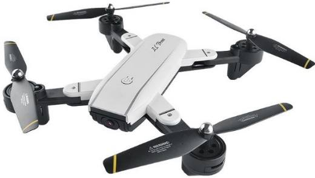
第 47 页 · 另一类经常被模仿的群体行为是鸟类的群集。当整个群体需要集体移动但又需要寻找特定目标时，就可以利用这种技术，而创建个体集群
另一类经常被模仿的群体行为是鸟类的群集。当整个群体需要集体移动但又需要寻找特定目标时，就可以利用这种技术，而创建个体集群的规则十分简单。
图12-5 一群椋鸟寻找最好的栖息地
12.3.3 微粒群（鸟群）优化算法
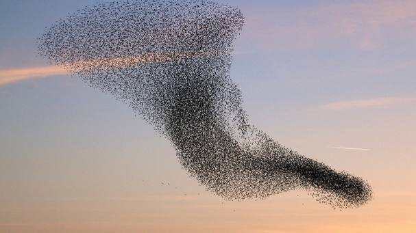
第 48 页 · （1）跟紧群体内其他成员。
（1）跟紧群体内其他成员。
（2）以周边成员的平均方向作为飞行方向。
（3）与其他成员和障碍物保持安全距离。
如果设置向某个目标偏转的趋势，整个集群都将根据趋势行进。
鸟类在群体飞行中往往能表现出一种智能的簇拥协同行为，尤其是在长途迁徙过程中，以特定的形状组队飞行可以充分利用互相产生的气流，从而减少体力消耗。
12.3.3 微粒群（鸟群）优化算法
第 49 页 · 常见的簇拥鸟群是迁徙的大雁，它们数量不多，往往排成一字型或者人字形，据科学估计，这种队形可以让大雁减少15~20%的体力
常见的簇拥鸟群是迁徙的大雁，它们数量不多，往往排成一字型或者人字形，据科学估计，这种队形可以让大雁减少15~20%的体力消耗。体型较小的欧椋鸟组成的鸟群的飞行则更富于变化，它们往往成千上万只一起在空中飞行，呈现出非常柔美的群体造型。
12.3.3 微粒群（鸟群）优化算法
第 50 页 · 基于3个简单规则，鸟群就可以创建出极复杂的交互和运动方式，形成奇特的整体形状，绕过障碍和躲避猎食者。
基于3个简单规则，鸟群就可以创建出极复杂的交互和运动方式，形成奇特的整体形状，绕过障碍和躲避猎食者。
（1）分离，和临近单位保持距离，避免拥挤碰撞。
（2）对齐，调整飞行方向，顺着周边单位的平均方向飞行。
（3）凝聚，调整飞行速度，保持在周边单位的中间位置。
鸟群没有中央控制，实际上每只鸟都是独立自主的，只考虑其周边球形空间内的5~10只鸟的情况。
12.3.3 微粒群（鸟群）优化算法
第 51 页 · 鱼群的群体行为和鸟群非常相似。金枪鱼、鲱鱼、沙丁鱼等很多鱼类都成群游行，这些鱼总是倾向于加入数量大的、体型大小与自身更相
鱼群的群体行为和鸟群非常相似。金枪鱼、鲱鱼、沙丁鱼等很多鱼类都成群游行，这些鱼总是倾向于加入数量大的、体型大小与自身更相似的鱼群，所以有的鱼群并不是完全由同一种鱼组成。群体游行不仅可以更有效利用水动力减少成员个体消耗，而且更有利于觅食和
生殖，以及躲避捕食者的猎杀。鱼群中的绝
大多数成员都不知道自己正在游向哪里。鱼
群使用共识决策机制，个体的决策会不断地
参照周边个体的行为进行调整，从而形成集
体方向。
12.3.3 微粒群（鸟群）优化算法
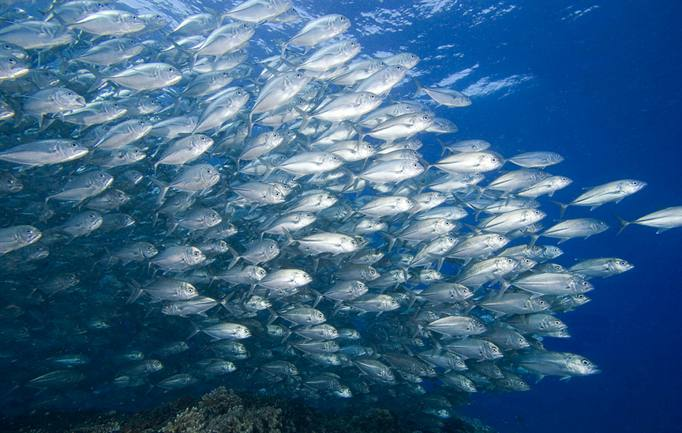
第 52 页 · 在哺乳动物中也常见群体行为，尤其是陆上的牛、羊、鹿，或者南极的企鹅。迁徙和逃脱猎杀时候，它们能表现出很强的集体意志。研究
在哺乳动物中也常见群体行为，尤其是陆上的牛、羊、鹿，或者南极的企鹅。迁徙和逃脱猎杀时候，它们能表现出很强的集体意志。研究表明，畜群的整体行为很大程度上取决于个体的模仿和跟风行为，而遇到危险的时候，则是个体的自私动机决定了整体的行为方向。
12.3.3 微粒群（鸟群）优化算法
第 53 页 · 细菌和植物也能够以特殊的方式表现出群体智能行为。培养皿中的枯草芽孢杆菌根据营养组合物和培养基的粘度，整个群体从中间向四周
细菌和植物也能够以特殊的方式表现出群体智能行为。培养皿中的枯草芽孢杆菌根据营养组合物和培养基的粘度，整个群体从中间向四周有规律的扩散迁移，形成随机但非常有规律的数值型状态。而植物的根系作为一个集体，各个根尖之间存在某种通信，遵循范围最大化且互相保持间隔的规律生长，进而能够最有效的利用空间吸收土壤中的养分。
12.3.3 微粒群（鸟群）优化算法
第 54 页 · 粒群优化算法最早是由肯尼迪和埃伯哈特于1995年提出的，是一种基于种群寻优的启发式搜索算法，其基本概念源于对鸟群群体运动
粒群优化算法最早是由肯尼迪和埃伯哈特于1995年提出的，是一种基于种群寻优的启发式搜索算法，其基本概念源于对鸟群群体运动行为的研究。在微粒群优化算法中，每个微粒代表待求解问题的一个潜在解，它相当于搜索空间中的一只鸟，其“飞行信息”包括位置和速度两个状态量。每个微粒都可获得其邻域内其他微粒个体的信息，并可根据该信息以及简单的位置和速度更新规则，改变自身的状态量，以便更好地适应环境。随着这一过程的进行，微粒群最终能够找到问题的近似最优解。
12.3.3 微粒群（鸟群）优化算法
第 55 页 · 由于微粒群优化算法概念简单，易于实现，并且具有较好的寻优特性，因此它在短期内得到迅速发展，目前已在许多领域中得到应用，如
由于微粒群优化算法概念简单，易于实现，并且具有较好的寻优特性，因此它在短期内得到迅速发展，目前已在许多领域中得到应用，如电力系统优化、TSP问题求解、神经网络训练、交通事故探测、参数辨识、模型优化等。
奥斯卡技术奖的获得者，计算机图形学家克雷格·雷诺兹在1986年开发了Boids鸟群算法，这种算法仅仅依赖分离、对齐、凝聚三个简单规则就实现各种动物群体行为的模拟。
12.3.3 微粒群（鸟群）优化算法
第 56 页 · 讨论遗传算法时，我们用一组称作“基因”的数字来代表群体中的每个独立个体，通过改变这些数字直到它们能够代表最优个体为止。就
讨论遗传算法时，我们用一组称作“基因”的数字来代表群体中的每个独立个体，通过改变这些数字直到它们能够代表最优个体为止。就同样的数字而言，利用群体智能技术，我们不再将它们看做染色体上的基因，而是看作图表或地图等空间上的位置。随着每个独立个体空间位置的变化，数字相应地发生改变，就像你走在曼哈顿大街上，代表你所在位置的街道数字发生改变一样。我们的搜索不再是固定个体的进化过程，而是不同个体的旅程。可以使用任何用来搜索位置的技术，例如蚂蚁觅食、蜜蜂群集或是鸟类聚集，而完全不用建造任何机器人。
12.3.4 没有机器人的集群
第 57 页 · PART 04
PART 04
群体智能背后的故事
第 58 页 · 在公园我们经常看到成群的鸟儿在树木上空飞旋，它们迟早会落在建筑的突出物上休息，之后在受了什么惊扰后又动作一致地再度起飞。
在公园我们经常看到成群的鸟儿在树木上空飞旋，它们迟早会落在建筑的突出物上休息，之后在受了什么惊扰后又动作一致地再度起飞。这群鸟中并没有领导，没有一只鸟儿会指示其他鸟儿该做什么，相反，它们各自密切注意身边的同伴。在空中飞旋时，全都遵循简单
规则，这些规则构成了另一种群体智能，它
与决策的关系不大，主要是用来精确协调行
动。
12.4 群体智能背后的故事
第 59 页 · 研究计算机制图的克雷格·雷诺兹对这些规则感到好奇，他在1986年设计了一个看似简单的导向程序，叫做“拟鸟”。在这个模拟程
研究计算机制图的克雷格·雷诺兹对这些规则感到好奇，他在1986年设计了一个看似简单的导向程序，叫做“拟鸟”。在这个模拟程序中，一种模仿鸟类的物体（拟鸟）接收到三项指示：
（1）避免挤到附近的拟鸟；
（2）按附近拟鸟的平均走向飞行；
（3）跟紧附近的拟鸟。
12.4 群体智能背后的故事
第 60 页 · 程序运行结果呈现在电脑屏幕上时，模拟出令人信服的鸟群飞舞效果，包括逼真的、无法预测的运动。当时，雷诺兹正在寻求能在电视和
程序运行结果呈现在电脑屏幕上时，模拟出令人信服的鸟群飞舞效果，包括逼真的、无法预测的运动。当时，雷诺兹正在寻求能在电视和电影中制造逼真动物特效的办法。1992年的《蝙蝠侠归来》是第一部利用他的技术制作的电影，其中模拟生成了成群的蝙蝠和企鹅。后来他在索尼公司从事电子游戏领域的研究，例如用一套算法实时模拟数量达1.5万的互动的鸟、鱼或人。雷诺兹展示了自组织模型在模仿群体行为方面的力量，这也为机器人工程师开辟了新路。如果能让一队机器人像一群鸟般协调行动，就比单独的机器人有优势得多。
12.4 群体智能背后的故事
第 61 页 · 宾夕法尼亚大学的机械工程教授维贾伊·库马尔说：“观察生物界中数目庞大的群体，很难发现其中哪一个承担中心角色。一切都是高度
宾夕法尼亚大学的机械工程教授维贾伊·库马尔说：“观察生物界中数目庞大的群体，很难发现其中哪一个承担中心角色。一切都是高度分散的：成员并不都参与交流，根据本地信息采取行动；它们都是无名的，不必在乎谁去完成任务，只要有人完成就行。要从单个机器人发展到多个机器人合作，这三个思路必不可少。”
12.4 群体智能背后的故事
第 62 页 · 据野生动物专家卡斯滕·霍耶尔在2003年的观察，陆地动物的群体行为也与鱼群相似。那年，他和妻子利恩·阿利森跟着一大群北美
据野生动物专家卡斯滕·霍耶尔在2003年的观察，陆地动物的群体行为也与鱼群相似。那年，他和妻子利恩·阿利森跟着一大群北美驯鹿旅行了五个月，行程超过1500公里，记录了它们的迁徙过程。迁徙从加拿大北部育空地区的冬季活动范围起始，到美国阿拉斯加
州北极国家野生动物保护区的产犊地
结束。
12.4 群体智能背后的故事
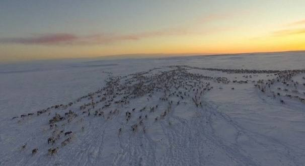
第 63 页 · 卡斯滕说：“这很难用语言形容。鹿群移动时就像云影漫过大地，或者一大片多米诺骨牌同时倒下并改变着方向。好像每头鹿都知道它周
卡斯滕说：“这很难用语言形容。鹿群移动时就像云影漫过大地，或者一大片多米诺骨牌同时倒下并改变着方向。好像每头鹿都知道它周边的同伴要做什么。这不是出于预计或回应，也没有因果关系，它们自然而然就这样行动。”
12.4 群体智能背后的故事
第 64 页 · 一天，正当鹿群收窄队形、穿过森林边界线上的一条溪谷时，卡斯滕和利恩看见一只狼偷袭过去。鹿群做出了经典的群体防御反应。卡斯
一天，正当鹿群收窄队形、穿过森林边界线上的一条溪谷时，卡斯滕和利恩看见一只狼偷袭过去。鹿群做出了经典的群体防御反应。卡斯滕说：“那只狼一进入鹿群外围的某一特定距离，鹿群就骤然提高了警惕。这时每头鹿都停下不动，完全处于戒备状态，四下张望。”狼又向前走了100米，突破了下一个限度。“离狼最近的那头鹿转身就跑，这反应就像波浪一样扫过整个鹿群，于是所有的鹿都跑了起来。之后逃生行动进入另一阶段。
12.4 群体智能背后的故事
第 65 页 · 鹿群后端与狼最接近的那一小群驯鹿就像条毯子般裂开，散成碎片，这在狼看来一定是极度费解的。”狼一会儿追这头鹿，一会儿又追那
鹿群后端与狼最接近的那一小群驯鹿就像条毯子般裂开，散成碎片，这在狼看来一定是极度费解的。”狼一会儿追这头鹿，一会儿又追那头，每换一次追击目标都会被甩得更远。最后，鹿群翻过山岭，脱逃而去，而狼留在那儿气喘吁吁，大口吞着雪。
每头驯鹿本来都面临着绝大的危险，但鹿群的躲避行动所表现的却不是恐慌，而是精准。每头驯鹿都知道该什么时候跑、跑往哪个方向，即便不知道为什么要这样做。没有领袖负责鹿群的协调，每头鹿都只是在遵循着几千年来应对恶狼袭击而演化出来的简单规则。
12.4 群体智能背后的故事
第 66 页 · 这就是群体智能的美妙魅力。无论我们讨论的是蚂蚁、蜜蜂、鸽子、还是北美驯鹿，智慧群体的组成要素——分散控制、针对本地信息行
这就是群体智能的美妙魅力。无论我们讨论的是蚂蚁、蜜蜂、鸽子、还是北美驯鹿，智慧群体的组成要素——分散控制、针对本地信息行动、简单的经验法则——加在一起，就构成了一套应对复杂情况的精明策略。
12.4 群体智能背后的故事
第 67 页 · 最大的变化可能体现在互联网上。谷歌利用群体智能来查找你的搜索内容。当你键入一条搜索时，谷歌会在它的索引服务器上考查数十亿
最大的变化可能体现在互联网上。谷歌利用群体智能来查找你的搜索内容。当你键入一条搜索时，谷歌会在它的索引服务器上考查数十亿网页，找出最相关的，然后按照它们被其他网页链接的次数进行排序，把链接当作投票来计数（最热门的网站还有加权票数，因为它们可靠性更高）。得到最多票数的网页被排在搜索结果列表的最前面。谷歌说，它通过这种方式，“利用网络的群体智能来决定一个网页的重要性”。
12.4 群体智能背后的故事
第 68 页 · 网络百科（维基、百度等）是一类免费的合作性百科全书，办得十分成功，其中有200多种语言写成的数以百万计的文章，世间万物无
网络百科（维基、百度等）是一类免费的合作性百科全书，办得十分成功，其中有200多种语言写成的数以百万计的文章，世间万物无不涉及，每一词条均可由任何人撰写、编辑。麻省理工学院集体智能中心的托马斯·马隆说：“如今可以让数目庞大的人群以全新的方式共同思考，这在几十年前我们连想都想不到。要解决我们全社会面临的问题，如医疗保健或气候变化，没有一个人的知识是够用的。但作为集体，我们的知识量远比迄今为止我们所能利用的多得多。”
12.4 群体智能背后的故事
第 69 页 · 这种想法突出反映了关于群体智能的一个重要真理：人群只有在每个成员做事尽责、自主决断的时候，才会发挥出智慧。群体内的成员如
这种想法突出反映了关于群体智能的一个重要真理：人群只有在每个成员做事尽责、自主决断的时候，才会发挥出智慧。群体内的成员如果互相模仿，盲从于潮流，或等着别人告诉自己该做什么，这个群体就不会很聪明。若要一个群体拥有智慧，无论它是由蚂蚁还是律师组成，都得依靠成员们各尽其力。我们有些人往往怀疑，值不值得把那只多余的瓶子拿去回收，来减轻我们对地球的压力。而事实是：我们的一举一动都事关重大，即使我们看不出其中玄机。
12.4 群体智能背后的故事
第 70 页 · 蜜蜂专家托马斯·西利说：“蜜蜂跟你我一样，从来看不到多少全局。我们谁都不知道社会作为一个总体需要什么，但我们会看看周围，
蜜蜂专家托马斯·西利说：“蜜蜂跟你我一样，从来看不到多少全局。我们谁都不知道社会作为一个总体需要什么，但我们会看看周围，说，哦，他们需要人在学校当义工，给社区修剪草坪，或者在政治宣传活动中帮忙。”
假如你要在一个充满复杂性的世界中寻找行为榜样，不妨去仿效蜜蜂吧。
12.4 群体智能背后的故事
第 71 页 · PART 05
PART 05
群体智能的应用
第 72 页 · 目前，国外对群体智能的应用侧重于底层技术领域，如集群结构框架、集群控制与优化、集群任务管理与协同等，国内则主要侧重于应用
目前，国外对群体智能的应用侧重于底层技术领域，如集群结构框架、集群控制与优化、集群任务管理与协同等，国内则主要侧重于应用领域，如集群路径实时规划、集群自主编队与重构、集群智能协同决策等。随着群体智能在现实场景的深入应用，将有力促进产业智能化和提高产业竞争力。另外，群体智能也正在深刻影响着军事领域，使战争形态加速向智能化演变，与之相应的战争观也发生了嬗变。
12.5 群体智能的应用
第 73 页 · （1）蜂群协同系统。美国的“进攻性蜂群战术”（OFFSET）项目（见图）探索未来的小单位步兵部队将是由小型无人机系统（U
（1）蜂群协同系统。美国的“进攻性蜂群战术”（OFFSET）项目（见图）探索未来的小单位步兵部队将是由小型无人机系统（UASs）或小型无人地面车辆系统（UGSs）组成的“蜂群”，可在复杂的环境中完成多种任务。相关研究成果也将直接应用到“马赛克战”体系中，推动低成本无人蜂群作战能力的快速成形。
12.5 群体智能的应用
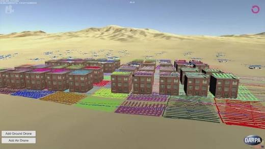
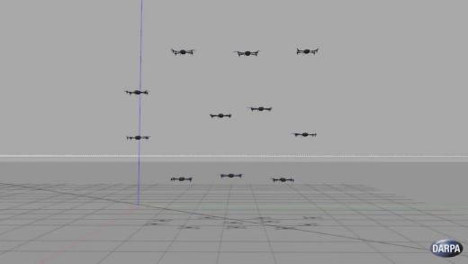
第 74 页 · （2）路径规划系统。群体智能支撑的路径规划技术被广泛应用于各种运动规划任务，极大地解决了多智能体间的群体协同决策问题，如
（2）路径规划系统。群体智能支撑的路径规划技术被广泛应用于各种运动规划任务，极大地解决了多智能体间的群体协同决策问题，如自动驾驶、车路协同、群体机器人等场景。各
国政府都制定政策，着重强调群体协同
决策在交通安全中的重要性。
12.5 群体智能的应用
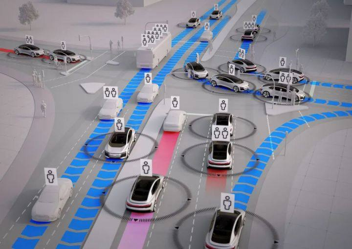
第 75 页 · （3）复杂电磁环境下的优化与控制。电磁频谱已作为第六维作战疆域引起世界各国的高度重视。2015年，美军发布的《关于国家安
（3）复杂电磁环境下的优化与控制。电磁频谱已作为第六维作战疆域引起世界各国的高度重视。2015年，美军发布的《关于国家安全的突破性技术》战略指南中明确指出“未来几年的研究重点将是确保控制电磁权”。2018年，美国空军组建了电子战/电磁频谱优势体系能力协作小组（ECCT），旨在研究如何确保电磁频谱优势，开始实质性推进电磁频谱战。
12.5 群体智能的应用
第 76 页 · 群体智能有“自组织、自适应”的技术特点，在电磁频谱战中的频谱状态感知、频谱趋势预测、频谱形式推理上具有独特的先天优势，可
群体智能有“自组织、自适应”的技术特点，在电磁频谱战中的频谱状态感知、频谱趋势预测、频谱形式推理上具有独特的先天优势，可以有效应对战场电磁环境的捷变性，提高战争中信息传输时效性，促进电磁频谱战的决策智能化。
12.5 群体智能的应用
第 77 页 · PART 06
PART 06
机器“狼”的发展
第 78 页 · 作为新一代人工智能的重要方向，自20世纪80年代提出以来，群体智能已成为信息、生物、社会等交叉学科的热点和前沿领域。20
作为新一代人工智能的重要方向，自20世纪80年代提出以来，群体智能已成为信息、生物、社会等交叉学科的热点和前沿领域。2017年7月8日，国务院印发了《新一代人工智能发展规划》（简称《AI发展规划》），明确指出群体智能研究方向，对于推动新一代人工智能发展有着十分重大的意义。国家科学技术部启动《科技创新2030“新一代人工智能”重大项目指南》，也将“群体智能”列为人工智能领域五大持续攻关方向之一。
12.6 机器“狼”的发展
第 79 页 · 可见，对于群体智能的探究具有重要的现实意义。群体智能作为新一代人工智能重点发展的五大智能形态（即大数据智能、群体智能、跨
可见，对于群体智能的探究具有重要的现实意义。群体智能作为新一代人工智能重点发展的五大智能形态（即大数据智能、群体智能、跨媒体智能、混合增强智能和自主智能）之一，在民事和军事领域都具有重要的应用前景。
12.6 机器“狼”的发展
第 80 页 · 2024年11月，在我国珠海开幕的第15届中国航展上，由中国兵器装备集团自动化研究所有限公司自主研制的智能化无人装备“机
2024年11月，在我国珠海开幕的第15届中国航展上，由中国兵器装备集团自动化研究所有限公司自主研制的智能化无人装备“机器狼群”首次亮相，它们打团战还有分工。
12.6 机器“狼”的发展
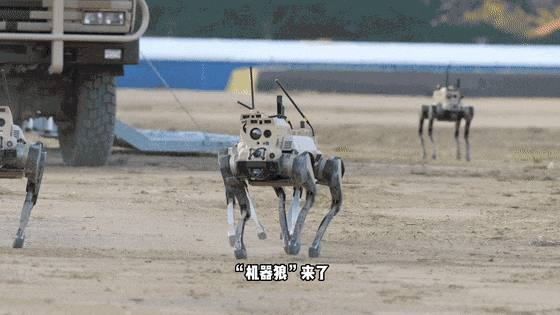
第 81 页 · 分队包括侦察探测“机器狼”、精确打击“机器狼”、伴随保障“机器狼”等成员，其中的“头狼”是侦察探测“机器狼”，负责对目标
分队包括侦察探测“机器狼”、精确打击“机器狼”、伴随保障“机器狼”等成员，其中的“头狼”是侦察探测“机器狼”，负责对目标进行信息收集。挂载步枪的精确打击“机器狼”是团战中的“射手”，它们是编队中的重要打击力量，在获得侦察探测“机器狼”回传的数据信息之后，可以对目标发起精确打击。而作为团队的“辅助”，伴随保障“机器狼”一次性可以运输20公斤左右的物资和弹药，让保战友没有后顾之忧。
12.6 机器“狼”的发展
第 82 页 · 机器狼属于四足机器人，就像野狼一样擅长“集群作战”。在实际作战当中，这样的“机器狼”作战分队能在复杂地形配合战士作战。通
机器狼属于四足机器人，就像野狼一样擅长“集群作战”。在实际作战当中，这样的“机器狼”作战分队能在复杂地形配合战士作战。通过智能无人集群的作战方式可以有效解决在城市市区、山地高
原等复杂场景中通信能力差、突击能力弱等问
题，为特战分队、步兵分队提供集群式的综合
作战手段。
图12-13 四足机器人——机器狼
12.6 机器“狼”的发展
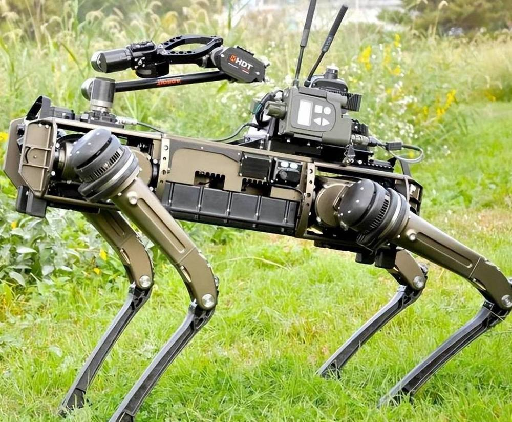
第 83 页 · 01

01
向蜜蜂学习
群体智能
02
什么是
群体智能
03
典型
算法模型
04
群体智能
背后的故事
目录 / CONTENTS
05
群体智能
的应用
06
机器“狼”
的发展
第 84 页 · 第12章
第12章
周苏 教授 QQ：81505050
群体智能技术